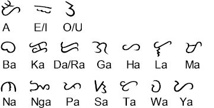

BAYBAYIN
Ang baybáyin ang sinaunang alpabeto ng mga Filipino bago pa dumating ang mga Español at maituro ang alpabetong Romano.
Mula ito sa salitâng “baybáy” ng mga Tagalog na nangangahulugan ng lupaing nása gilid ng dagat at ng “pagbaybáy” na nangangahulugan ng ispeling.
Ang baybayin ay nása anyong pantigan na may tatlong patinig (a,e-i,o-u) at umaabot sa 14 katinig.
Makikita ang mga halimbawa ng baybayin sa Doctrina Cristiana (1593), ang pinakaunang aklat na nalathala sa Filipinas na isinulat ng mga misyonerong Español.
Sinasabing lahat ng mga katutubo ay marunong magbasá at magsulat sa baybayin. Balát ng punongkahoy at kawayan ang karaniwang gamit na sulatan ng mga
sinaunang Tagalog at iniuukit dito ang mga titik sa pamamagitan ng matulis na bagay.
namumuhay. Nagpapatunay na may sibilisasyon na tayo bago pa dumating ang mga mananakop.
May inilalagay na gitling o tuldok sa ibabaw ng katinig bilang tanda sa tunog ng “e” o “i” at sa ilalim naman bilang tanda sa tunog ng “o” o “u” na kasáma ng katinig.
Isang ebidensiya ng baybayin ang iniukit na sulat sa isang matandang palayok na natagpuan ng mga arkeologo sa Calatagan, Batangas.
Sa ngayon, ginagamit pa ng mga Mangyan sa Mindoro at ng mga Tagbanwa sa Palawan ang baybayin. Ginagamit nila ito sa pagsulat ng maiikling tula, awit, at paggawa ng liham pag-ibig.
Minsan ay tinawag ni Paul Rodriguez Verzosa ang Baybayin na “alibata,” batay sa palagay niyang hango ito sa alpabetong Arabe (alif, ba, ta)
ngunit inalis ang titik “f.” Gayunman, walang ebidensyang sumusuporta sa ugnayan ng Baybayin at wikang Arabe, kaya’t hindi na ginagamit ang “alibata” bilang tamang tawag sa sinaunang alpabeto ng Filipinas.